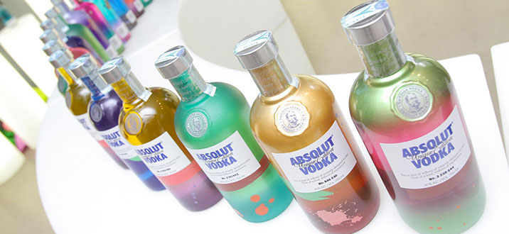
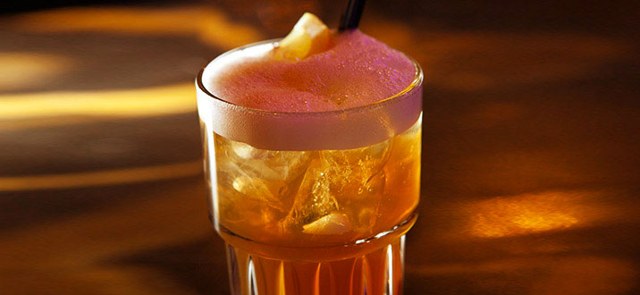
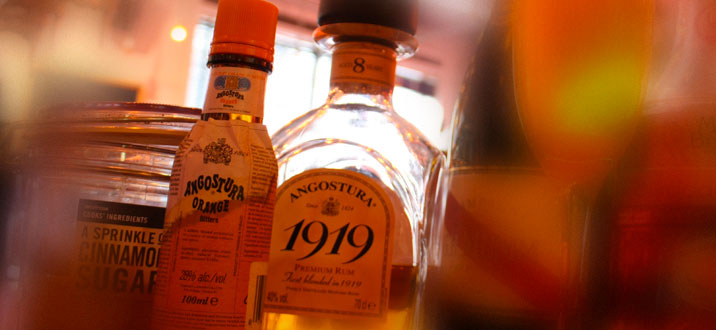

Absolut una bottiglia UNICA
Absolut Vodka lancia una bottiglia ognuna unica nel suo colore. 4 milioni sono tanti ma, forse, non abbastanza per “ospitare” tutte le varianti possibili di colori. Il nuovo azzardo tentato da Absolut Vodka per il Natale 2012 è quello di realizzare una limited edition esclusiva…ma non troppo. Perché ognuna delle bottiglie è ricoperta da una texture di colori differenti, uniche, appunto. L’Absolut, in fase di realizzazione della decorazione delle bottiglie, ha introdotto una nuova linea artistica utilizzando l’aerografia: colori ed effetti di questi si sono mixati in un’infinita possibilità di texture rendendo ognuna delle bottiglie un esemplare differente. La prima sensazione che si ha guardando questa esplosione di colori è quella di quando nello shaker gli ingredienti si mischiano per dare vita a un nuovo gusto. Continua la ricerca del brand di fare della propria bottiglia una “carta bianca” per l’arte contemporanea. Da consumare responsabilmente.
Long Island Iced Tea – la vera storia
il long island iced tea è uno dei cocktail più diffusi e conosciuti al mondo. Nasce nel 1970 dalle mani di Rosebud Butts, un barman della città di Babylon, (long island, new york). Deve il suo nome al fatto che, se preparato correttamente, il cocktail ha un sapore molto simile a quello del te freddo, anche se la sua percentuale alcolica è relativamente alta, è da sfatare il mito che proclama che il drink nasca nel periodo del proibizionismo americano per eludere i controlli della polizia, dato che in quel periodo era difficile reperire già uno solo di questi ingredienti, figuriamoci tutti e cinque. Il long island è talmente gradito e richiesto che ha dato vita ad una sottocategoria di cocktail: GLI ICED TEA ma andiamo a vedere alcune di queste ricette, e con cosa iniziare se non con il nostro LONG ISLAND ICED TEA!
Angostura conquista 7 medaglie
Angostura conquista 7 medaglie allo Spirits Business Rum Master Sono 7 le medaglie d’oro conquistate dai Rum Angostura a Marzo allo Spirits Business Rum Master Competition 2012. Medaglie che testimoniano ancora una volta l’altissima qualità dei Rum di Trinidad&Tobago, assegnate da una platea di esperti del settore e da barman professionisti che hanno riconosciuto l’altissimo valore di uno dei più importanti e rispettati brand a livello globale. Tasting Angostura Reserva Gold Angostura 7yrs Gold Angostura 5yrs Gold Angostura 1824 Gold Angostura 1919 Gold Design & Packaging Angostura 1824 Gold Angostura 1919 Gold Cinque medaglie d’oro per l’unicità e il gusto morbido dei Rum Angostura e due per i nuovi innovativi pack dei Rum 1824 e 1919. Distribuiti in Italia da Gancia, importante realtà vitivinicola piemontese, nota anche per la produzione di alcuni spirits di grande qualità come il Vermouth, si è inoltre contraddistinta negli anni per l’attenzione e la selezione alla qualità e alla storia e tradizione dei prodotti alcolici da distribuire in Italia. Tra questi Angostura Rum e Angostura Bitter. Un lavoro meticoloso e consapevole, guidato dalla volontà di appagare le esigenze specifiche sia del consumatore che dei bartender: soddisfare i clienti più esigenti con scelte di qualità. Cosa apetti vieni al Machè a provare Angostura 1919 Gold… esaltando tutti i suoi sapori con un ottima degustazione…